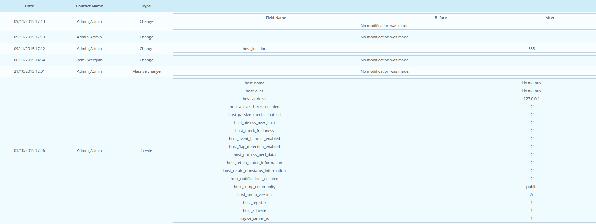

Logging configuration changes¶
Principle¶
By default, Centreon retains all user actions concerning changes to configuration in a log. To access this data, go into the menu: Administration ==> Logs.

The grey search bar can be used to filter the information presented via filters:
- Object used to filter on object name (host, service, contact, SNMP trap definition, group, etc.)
- User used to filter by change author
- Object Type used to filter by object type
Practice¶
E.g.: To see all the actions performed by the user: admin, enter “admin” in the User field and click on Search.
The table below defines the columns in the results table:
| Column Name | Description |
|---|---|
| Time | Indicates the date of the event |
| Modification type | Contains the type of action performed. There are several types of action possible:
|
| Type | Indicates object type |
| Object | Indicates object name |
| Author | Indicates the user having performed this change |
By clicking on the name of an object, you can view the history of the changes performed on it.
The table below defines the columns of the changes table:
| Column Name | Description |
|---|---|
| Date | Date of the change |
| Contact Name | Name of the person having performed the change |
| Type | Modification type |
The last column describes the change itself :
|